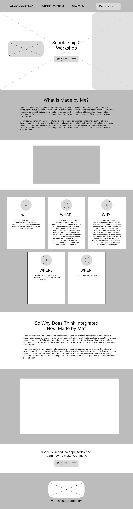
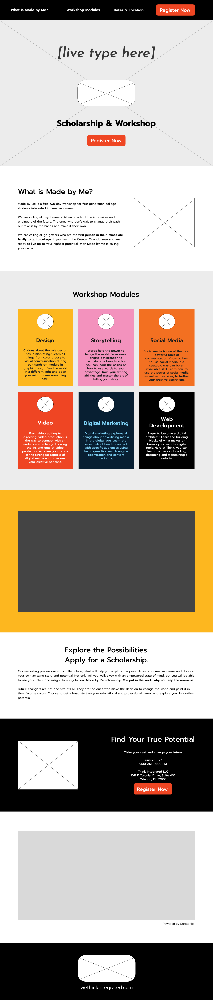

Made by Me: The Workshop Landing Page
Overview & Background
Made by Me is a two-day career workshop hosted by Think Integrated with a $1,000 scholarship opportunity. It is directed towards first-generation college students interested in creative fields such as marketing, storytelling, and design.
The page hosts Eventbrite links for interested individuals to register for the workshop. Details and info about the event and scholarship opportunity are present throughout.
This site was completed during my time as a web development intern at Think Integrated. I worked closely with a team of interns, who handled other important aspects of this marketing campaign such as design, social media, content creation, video, copy, and accounts.
Wireframes
First Iteration
Later Rendition
Key Features
- Bookmarks for important sections placed in nav bar
- Link to register found in 3 spots
- Engaging UI
- Curator.io embed for dynamic social media integration
Skills Highlighted
- Building reusable blocks with PHP
- Using WordPress to build and manage the site's content
- Advanced Custom Fields (ACF) plugin utilized; a repeater field in particular
- Responsive design
- Web Content Accessibility Guidelines (WCAG) enforced
- Use of Bootstrap framework
Tools Utilized
- WordPress
- PHP
- Bootstrap
- Figma
- CSS3
- HTML5
- Curator.io
Obstacles
The biggest challenges faced in this project were due to the learning curve for PHP and WordPress, given that I was a first-time user of them. A specific section of the page that challenged me was the card elements for the workshop modules, which involved creating a custom PHP block and integrating Bootstrap for the format and styling. Once I learned how each tool I was using could contribute to the design and function of the page, I was able to speed up my development process and make great leaps in my understanding of them.
Wrap-Up
This was a monumental learning experience for me, both in design, development, and teamwork. I was the sole developer for the site, though I worked in a team of interns that contributed the copy, some design ideas, and the GIF displayed in the hero. I also used guidance from the professional developers at Think Integrated to make sure the site was polished and brought to its full potential.